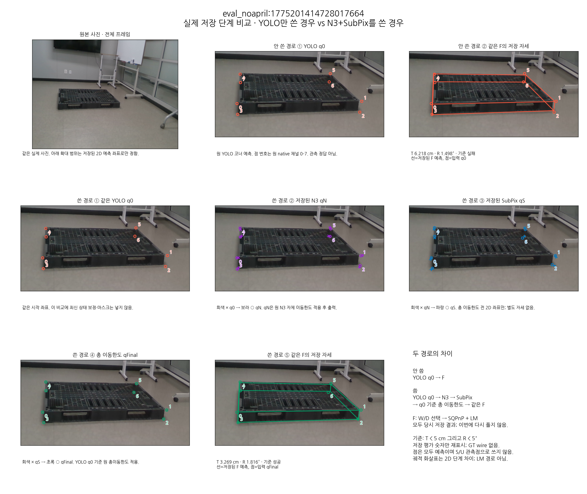
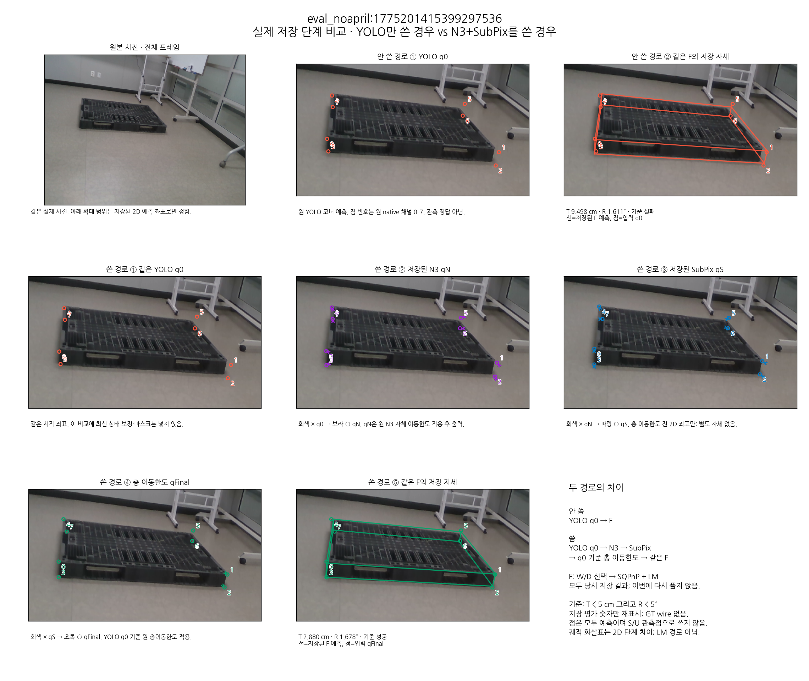
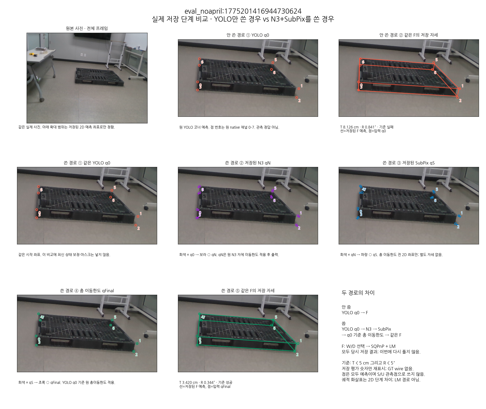
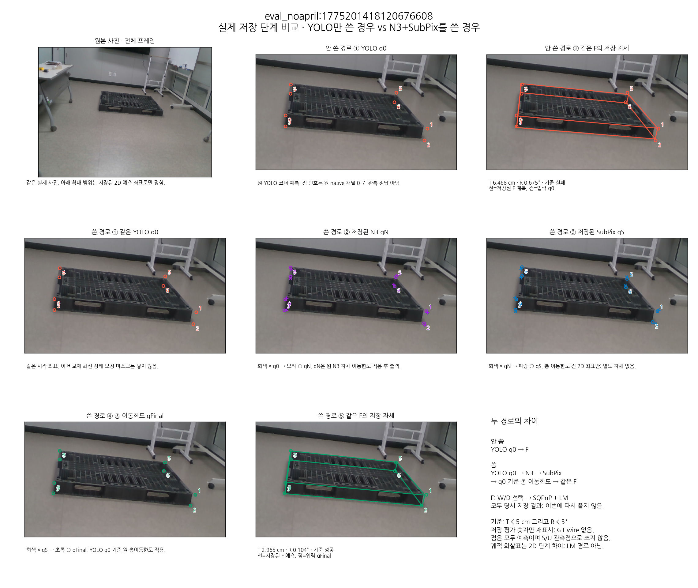
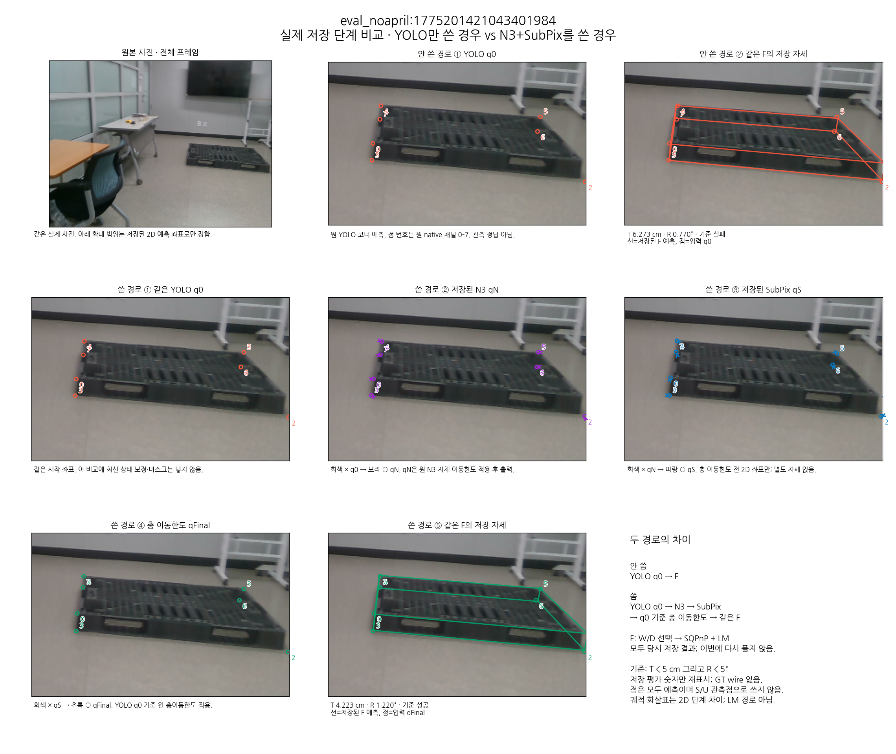
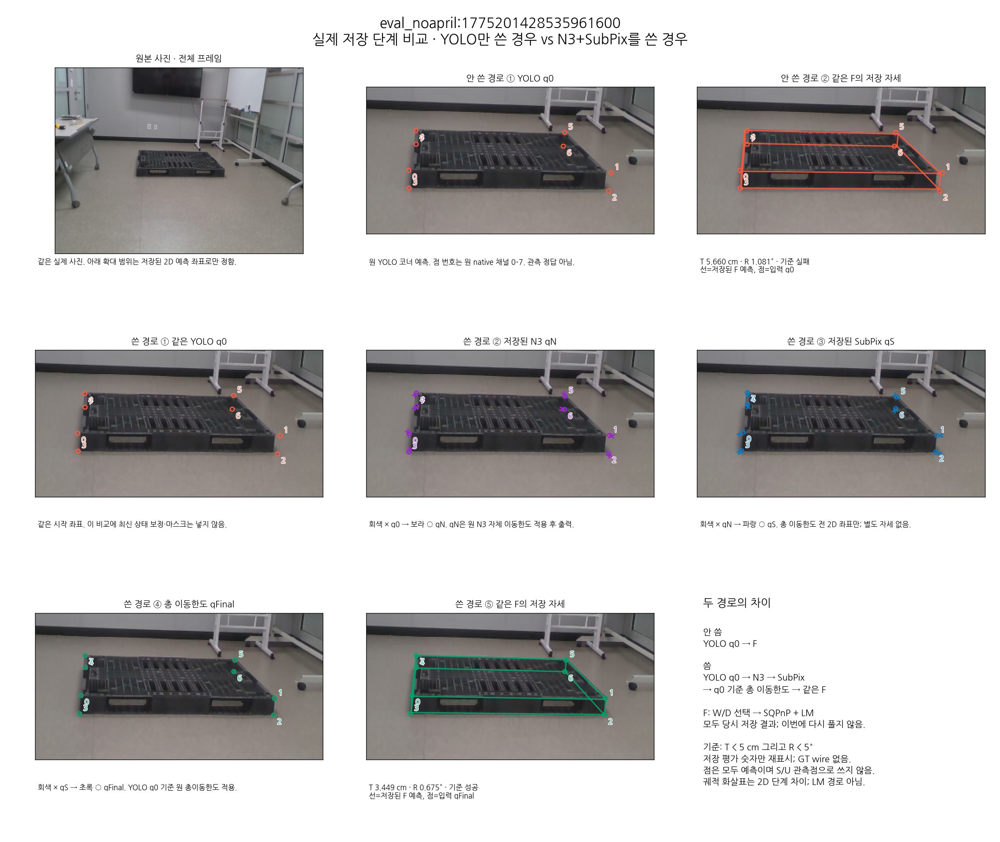
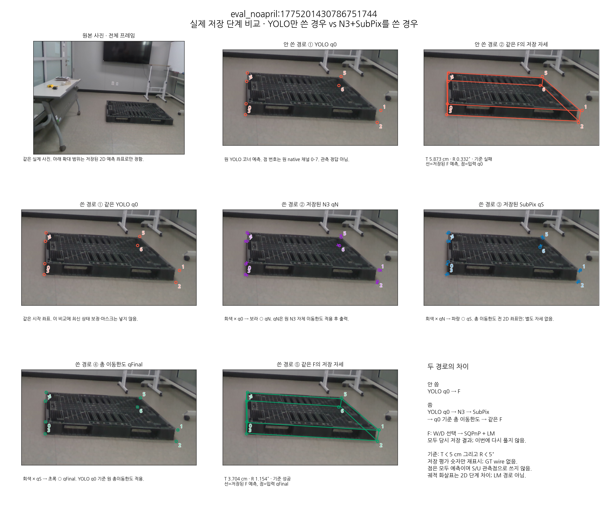
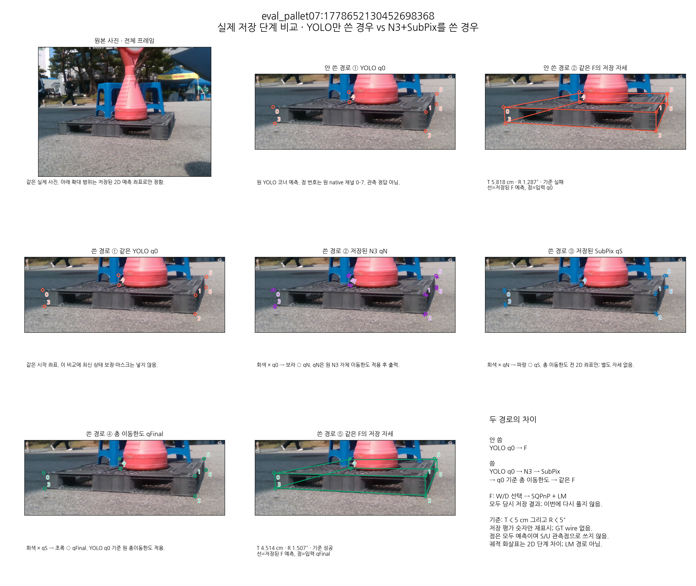
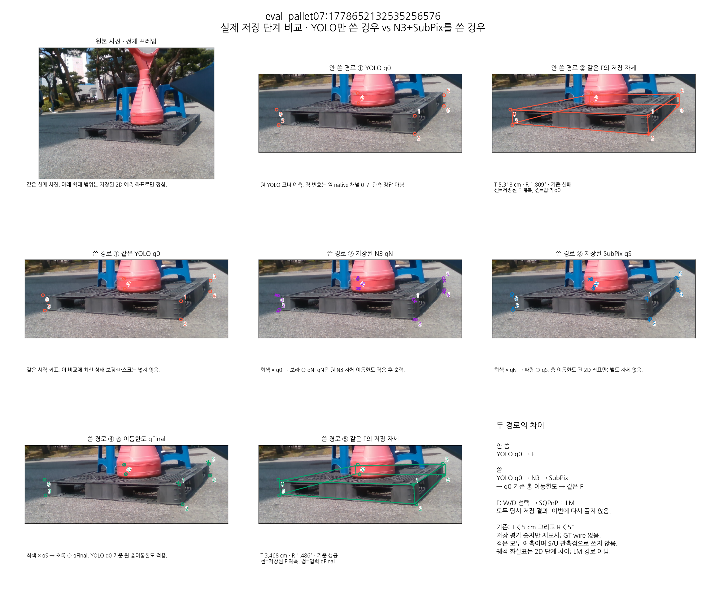
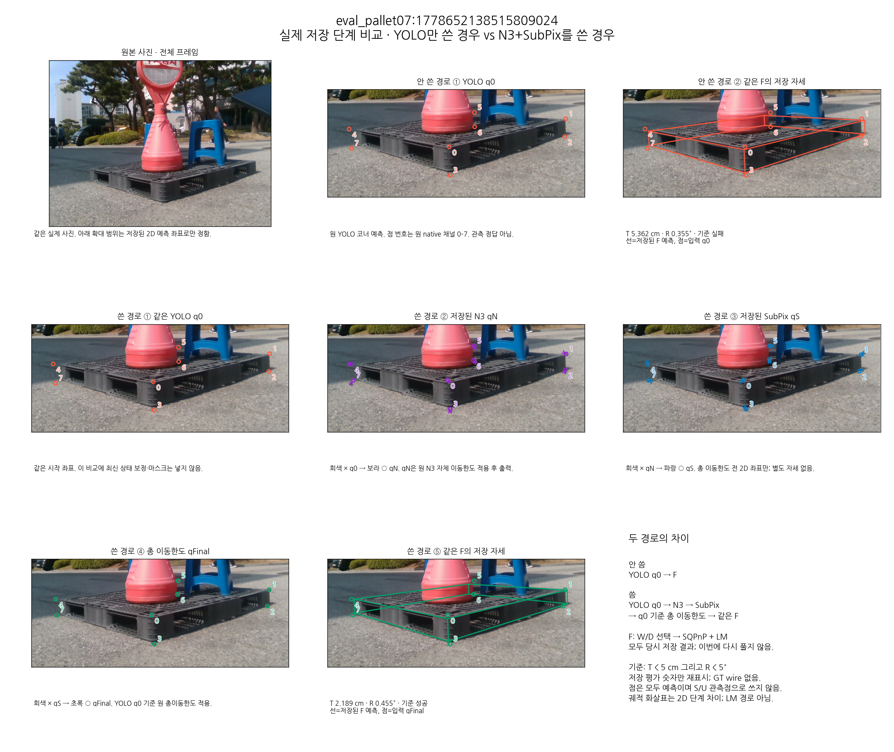

기존 TEST49: 성공 30/49 → 40/49. 실패→성공 10장, 성공→실패 0장. 기준 T < 5 cm 및 R < 5°. 각 사례는 같은 사진·같은 확대 범위로 비교합니다.
윗줄: YOLO → 같은 F. 아랫줄: YOLO → N3 → SubPix → 총 이동한도 → 같은 F. 모든 점과 선은 저장된 예측이며 정답이 아닙니다. 중간 좌표는 실제 캐시, 마지막 선은 저장된 F 자세입니다. 새 PnP/추론/정답 조회는 없습니다.
YOLO+F: T 6.218 cm / R 1.498° → N3+SubPix+F: T 3.269 cm / R 1.816°
원본 전체 사진 · 과정 PNG 원본 크기 · 저장 값·출처

YOLO+F: T 9.498 cm / R 1.611° → N3+SubPix+F: T 2.880 cm / R 1.678°
원본 전체 사진 · 과정 PNG 원본 크기 · 저장 값·출처

YOLO+F: T 8.126 cm / R 0.841° → N3+SubPix+F: T 3.420 cm / R 0.344°
원본 전체 사진 · 과정 PNG 원본 크기 · 저장 값·출처

YOLO+F: T 6.468 cm / R 0.675° → N3+SubPix+F: T 2.965 cm / R 0.104°
원본 전체 사진 · 과정 PNG 원본 크기 · 저장 값·출처

YOLO+F: T 6.273 cm / R 0.770° → N3+SubPix+F: T 4.223 cm / R 1.220°
원본 전체 사진 · 과정 PNG 원본 크기 · 저장 값·출처

YOLO+F: T 5.660 cm / R 1.081° → N3+SubPix+F: T 3.449 cm / R 0.675°
원본 전체 사진 · 과정 PNG 원본 크기 · 저장 값·출처

YOLO+F: T 5.873 cm / R 0.332° → N3+SubPix+F: T 3.704 cm / R 1.154°
원본 전체 사진 · 과정 PNG 원본 크기 · 저장 값·출처

YOLO+F: T 5.818 cm / R 1.287° → N3+SubPix+F: T 4.514 cm / R 1.507°
원본 전체 사진 · 과정 PNG 원본 크기 · 저장 값·출처

YOLO+F: T 5.318 cm / R 1.809° → N3+SubPix+F: T 3.468 cm / R 1.486°
원본 전체 사진 · 과정 PNG 원본 크기 · 저장 값·출처

YOLO+F: T 5.362 cm / R 0.355° → N3+SubPix+F: T 2.189 cm / R 0.455°
원본 전체 사진 · 과정 PNG 원본 크기 · 저장 값·출처
